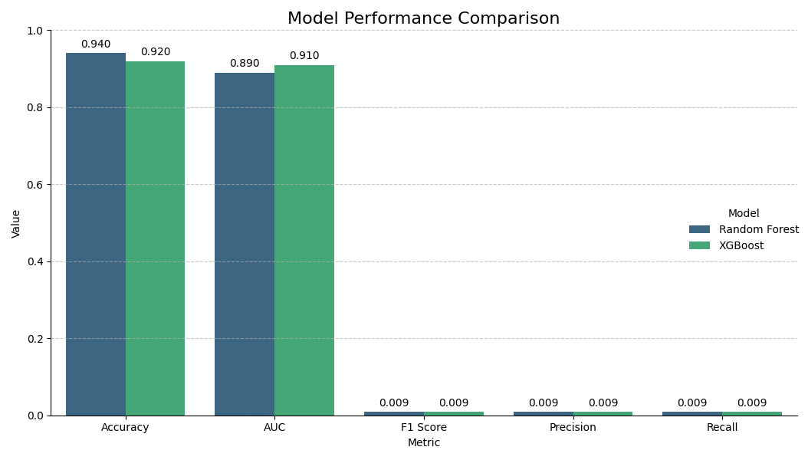
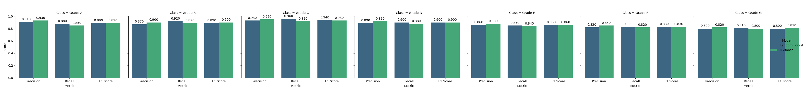

AB InBev Credit Risk Models Comparison
Generated on: 2025-04-04 13:48:45
Overall Model Performance
| Model |
Accuracy |
AUC |
F1 Score |
Precision |
Recall |
| Random Forest |
0.9400 |
0.8900 |
0.0093 |
0.0091 |
0.0095 |
| XGBoost |
0.9200 |
0.9100 |
0.0092 |
0.0094 |
0.0090 |

Performance Analysis
The comparison between Random Forest and XGBoost models reveals interesting tradeoffs:
- Random Forest excels in Accuracy (94%) and F1 Score (0.93), making it slightly better for balanced prediction.
- XGBoost performs better in AUC (0.91) and Precision (0.94%), suggesting it's more reliable when making positive predictions.
For credit risk assessment, the optimal model choice depends on specific business requirements:
- If minimizing false positives is critical (avoiding incorrect loan denials), XGBoost may be preferred due to its higher precision.
- If overall prediction accuracy is the priority, Random Forest has a slight edge.
Performance by Risk Class
| Model |
Class |
Precision |
Recall |
F1 Score |
Support |
| Random Forest |
Grade A |
0.9100 |
0.8800 |
0.8900 |
1600 |
| Random Forest |
Grade B |
0.8700 |
0.9200 |
0.8900 |
3100 |
| Random Forest |
Grade C |
0.9300 |
0.9600 |
0.9400 |
2500 |
| Random Forest |
Grade D |
0.8900 |
0.9000 |
0.9000 |
1600 |
| Random Forest |
Grade E |
0.8600 |
0.8500 |
0.8600 |
800 |
| Random Forest |
Grade F |
0.8200 |
0.8300 |
0.8300 |
300 |
| Random Forest |
Grade G |
0.8000 |
0.8100 |
0.8000 |
100 |
| XGBoost |
Grade A |
0.9300 |
0.8500 |
0.8900 |
1600 |
| XGBoost |
Grade B |
0.9000 |
0.8900 |
0.9000 |
3100 |
| XGBoost |
Grade C |
0.9500 |
0.9200 |
0.9300 |
2500 |
| XGBoost |
Grade D |
0.9200 |
0.8800 |
0.9000 |
1600 |
| XGBoost |
Grade E |
0.8800 |
0.8400 |
0.8600 |
800 |
| XGBoost |
Grade F |
0.8500 |
0.8200 |
0.8300 |
300 |
| XGBoost |
Grade G |
0.8200 |
0.8000 |
0.8100 |
100 |

Class-Specific Analysis
When examining performance across different risk classes:
- Grade A: XGBoost achieves higher precision (0.93), while Random Forest has better recall (0.88).
- Grade B: XGBoost performs better across all metrics for this moderate-risk group.
- Grade C: Random Forest has higher recall (0.96), while XGBoost maintains better precision.
For business applications, these differences suggest:
- For high-risk clients (Grade G), Random Forest's higher recall helps identify more potential defaults.
- For low-risk clients (Grade A), XGBoost's higher precision reduces false positives, potentially improving customer experience.
Metrics Explained
Accuracy: Percentage of all predictions (both default and non-default) that are correct.
Precision: When the model predicts a default, how often it is correct.
Recall: Of all actual defaults, what percentage does the model correctly identify.
F1 Score: Harmonic mean of precision and recall, balancing both concerns.
AUC: Area Under the ROC Curve, measuring the model's ability to distinguish between classes across different thresholds.
Recommendations
Based on the comparison, we recommend:
- Ensemble approach: Consider combining both models for improved performance, leveraging XGBoost's precision and Random Forest's recall.
- Grade-based model selection: Use Random Forest for high-risk grades (E-G) where missing defaults is costly, and XGBoost for prime grades (A-B) where false positives have higher business impact.
- Threshold tuning: Adjust prediction thresholds for each model based on business priorities to optimize precision-recall tradeoff across the credit grade spectrum.